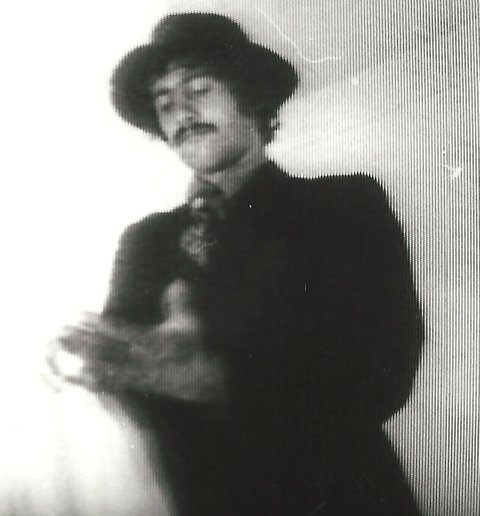
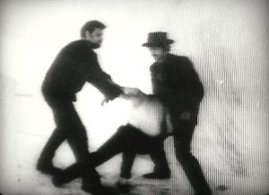
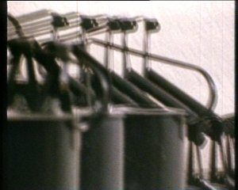
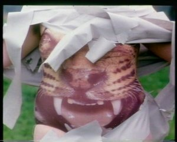

lost & found
ALEXEIJ SAGERER
Website von Alexeij Sagerer
Alexeij Sagerer, „Urgestein der Münchner Theatersubversion“ (FAZ), hatte zu Beginn seines Schaffens erste Filme realisiert, was sich durch sein gesamtes Werk in immer neuen Transformationen hindurchziehen sollte. Mit der „Filmpoesie“ ROMANCE (1969) und dem Gangsterfilm KRIMI (1969), einem „Film über Kino“, hatte sich Sagerer einen Platz im Umkreis des Jungen Deutschen Films (Vlado Kristl, Herbert Achternbusch, Werner Herzog und Rainer Werner Fassbinder) geschaffen. Sie alle nannte Helmut Schödel 1979 in der ZEIT die Münchner „Anarcho-Bohème“ und hob ihren „Mut zur Unvernunft“ hervor.

Mit dem „proT“, das Sagerer ab 1969 in München leitete, entwickelte er das post-dramatische, „unmittelbare“ Theater, und revolutionierte die Landschaft des Repräsentationstheaters, mit weitreichendem Einfluss bis hin zur documenta-Teilnahme 1987 mit der szenischen Skulptur „Küssende Fernseher“. Mit seinen Filmen, die er bis AUMÜHLE (1973) realisierte, erhielt er die Einladung, dem Filmverlag der Autoren beizutreten. Er nahm Abstand davon, als er im Kleingedruckten das Blasphemie-Verbot entdeckte. Später, als er sich gegen den klassischen Film entschieden hatte, wurde er zum Videopionier und integrierte als einer der ersten das Medium Film ins Theater.
Wie
Fassbinder und Achternbusch setzt Sagerer in seinen Filmen
eine Sprache ein, die statisch und gekünstelt wirkt und das
Naturalistische der sogenannten Repräsentationssprache
meidet. Es gibt keine Pseudo-Gefühle, keinen Pseudo-Realismus,
sondern unmittelbare Dokumentation (im
Sinne des Direct Cinema) oder dokumentierte Handlung (im
Geiste des unmittelbaren Theaters), die bei Sagerer dann auch
ins Symbolische hineinreicht. Ohne vordergründige
politische Aussage oder Handlung sind seine Filme so auch
politische Filme, die das Unsagbare, Unzeigbare zur
Darstellung bringen, und das im kollektiven
Unterbewusstsein Verborgene. (Dunja Bialas)
sonntag 8 okt 15.00 uhr werkstattkino
Krimi

BRD 1969 - 35 mm – 35 minPremiere 2. Dezember 1969
Europa-Filmpalast, München
B: Alexeij Sagerer – K: Lothar Stickel-
brucks – S: Lothar Stickelbrucks, Alexeij Sagerer – M: Maximilian von Berg – P: proT
Mit Guenter Albert, Erwin A. Leitner,
Manuela Hollack, Maximilian von Berg, Christopher Price, Reinhold Nothoff
Film über Kino.
„Gesabberte Wunschwelt, so grotesk wie pervers. Freund leiht
Auto von Detektiv. Mit Mädchen ins Grüne. Überfall. Sexuell
stimulierte Brutalitätenkiste: ,Wo Geld, du Schwein?’ Zwist
zwischen Ober- und Untergangstern. Mädchen Wanderpokal. Sagerer
benutzt diese primitiven Elemente kriminalistischer
Reißerspannung zu perfiden Entlarvungsspiegelungen des
Zuschauerbewusstseins. Er verpopt
Folterblutgesudel mit Schnellpennerkomik, Detektivpose mit
gelöcherten Krimileichen. Das wird am Ende sogar witzig. Ein
böser Comicstrip, mit Spruchblasengerede. Fazit: Über die
deformierte Phantasie.“
(PONKIE, Abendzeitung, 1969)
Pherachthis

BRD 1970 – 16mm – 13 minPremiere 12. April 1970
B: Alexeij Sagerer, Jürgen von
Hündeberg – K: Axel Hesse
M: Jürgen von Hündeberg
In diesem Film treten nur säurefeste Tintenkannen auf, die früher in Schulen zum tropffreien Nachfüllen der Tintenfässer in den Schulbänken benutzt wurden. Kein nostalgischer Film. Nach ihrem Dasein als Tintenkanne ist der Film einer der Höhepunkte in der Kannen-Existenz.
Romance
Premiere 30. November 1969
B: Alexeij Sagerer, Jürgen von Hünde-
berg – K: Axel Hesse – M: Jürgen von Hündeberg – Mit George Augusta, Rosemarie Barens
ROMANCE ist der Beginn von Alexeij
Sagerers „Kunst- und Musikfilmen“, in die auch PHERACHTHIS
gehört und die später weitergeführt werden mit den
Synchronisatoren für das Nibelungen- & Deutschlandprojekt.
ROMANCE ist reiner Film, reine Bewegung. Der Mann und die Frau
stellen nichts dar, ihre Bewegungen sind nicht von Bedeutung
getragen, sie werden produziert. Das Tempo ist extrem langsam
(es sind keine Zeitlupen). Gehen, Drehen, sich abwenden, sich
zuwenden, Drehung des Kopfes, Veränderung des Blickes der Augen
...
Jede filmische Einstellung ist für sich gebaut, die Hintergründe
werden immer wieder verändert – mit Stoffen, mit Materialien,
mit Farben. Die Lichtqualität wir immer wieder neu gesetzt:
Weißes Licht, kaltes Licht, gelbes Licht, bewegte
Lichtprojektionen usw.
RAMNCE wird anfangs gezeigt als simultaner Gegenraum mit der
theatralen Arbeit Die Nashörner nach Eugène Ionesco, in der die
Akteure permanent mit Kannen agieren. Seine Solo-Premiere hat
Romance beim Aktionsabend I am 30. November 1969.
Werbefilm für Tieger

BRD 1978 – 35 mm – 1'30''B: Alexeij Sagerer – K: Sepp Heyne Mit Jürgen von Hündeberg, Cornelie Müller, Agathe Taffertshofer, Billie Zöckler und Alexeij Sagerer
Der Film wurde 1978 und die folgenden Jahre in Münchner Kinos (z. B. den Leopoldkinos und dem Studio Isabella) als Werbefilm gezeigt. Für die Theaterproduktionen „Der Tieger von Äschnapur Eins oder Ich bin die letzte Prinzessin aus Niederbayern“, „Der Tieger von Äschnapur Zwei oder Ich bin das einzige Opfer eines Massenmordes“ und „Der Tieger von Äschnapur Drei oder Ich bin imbrünstig mein Alexeij Sagerer“.
Alexeij Sagerer * 1944 in Plattling. Seit 1969 leitete er in München das ProT, mit dem er seit 48 Jahren politisches Theater ohne vordergründig politische Themen realisiert und das unmittelbare Theater entwickelte. In jüngster Zeit besinnt sich Sagerer wieder auf sein filmisches Werk, das ab 1973 stets im
Zusammenhang mit seinen Theaterproduktionen entstand, und in dessen Zentrum ab der Jahrtausendwende der unmittelbare Film rückte. 2017 kam sein Langfilm AUMÜHLE (1973) in restaurierter Fassung zur Wiederaufführung.
Filme Krimi 1969 – Romance 1969 – Pherachthis 1970 – Aumühle 1973 – Werbefilm Eins 1978 – Werbefilm Zwei 1980 – Musikfilm 1980 – Räume I & II 1980 – Die Nibelungen am VierVideoTurm 1992 – Der größte Film aller Zeiten 1997ff. – Reine Pornographie 2006 – Reines Trinken 2008